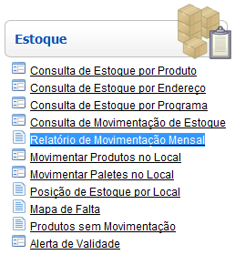
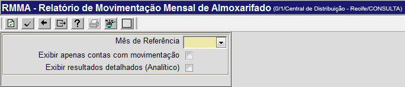
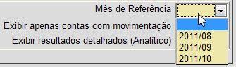
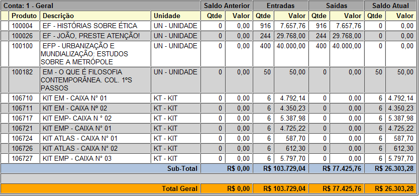
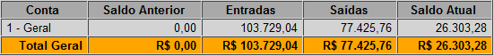
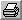

Relatório de Movimentação Mensal [ Voltar ]Este formulário permite a geração de um relatório contendo todas as movimentações no almoxarifado em um determinado mês. Este formulário se encontra dentro do menu "Estoque". 
Ao clicar no menu, a seguinte tela será exibida: 
Execute os seguintes passos para gerar o relatório: 1º Passo: especifique o mês de referência para o qual deseja ver as movimentações. Na aba "Mês de Referência", o sistema disponibiliza uma listagem contendo os três últimos meses para a consulta de movimentações. Selecione o mês desejado. 
2° Passo: selecione os filtros. Se for necessário, você pode selecionar um dos filtros(ou os dois) para mostrar determinados resultados:
Observação: o preenchimento dos filtros não é obrigatório.
3º Passo: clique no botão a) Exemplo de relatório analítico: 
b) Exemplo de relatório sintético: 
4º Passo: se desejar,
clique no botão  para visualizar a
tela de impressão do relatório. Em seguida, clique no botão |
 para gerar o relatório.
A tabela será mostrada na tela. Dependendo do filtro selecionado, o relatório será analítico ou sintético:
para gerar o relatório.
A tabela será mostrada na tela. Dependendo do filtro selecionado, o relatório será analítico ou sintético: [Imprimir] do navegador
para iniciar a impressão.
[Imprimir] do navegador
para iniciar a impressão.